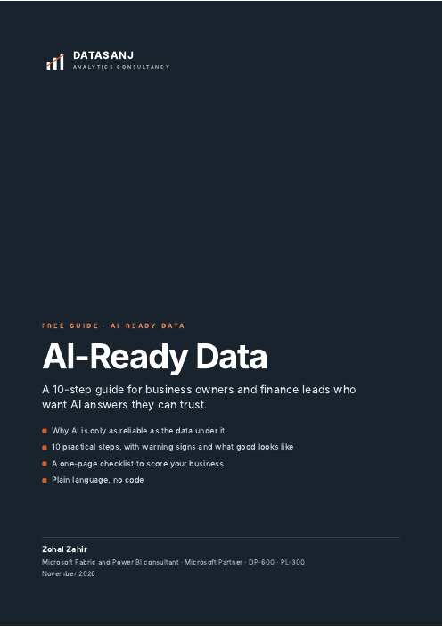

Free guide · 10 pages
AI-Ready Data: a 10-step guide for business owners
- Why AI is only as reliable as the data under it
- 10 steps, each with warning signs and what good looks like
- A one-page checklist to score your business
- Plain language, no code